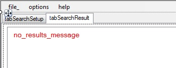

Message appearing on search screen.
Message appearing on search screen.
If there are no hits/results after search completed, the following messages will appear. Try widening the search or changing the criterias from previous search.
<Current version 1.0.0.0>